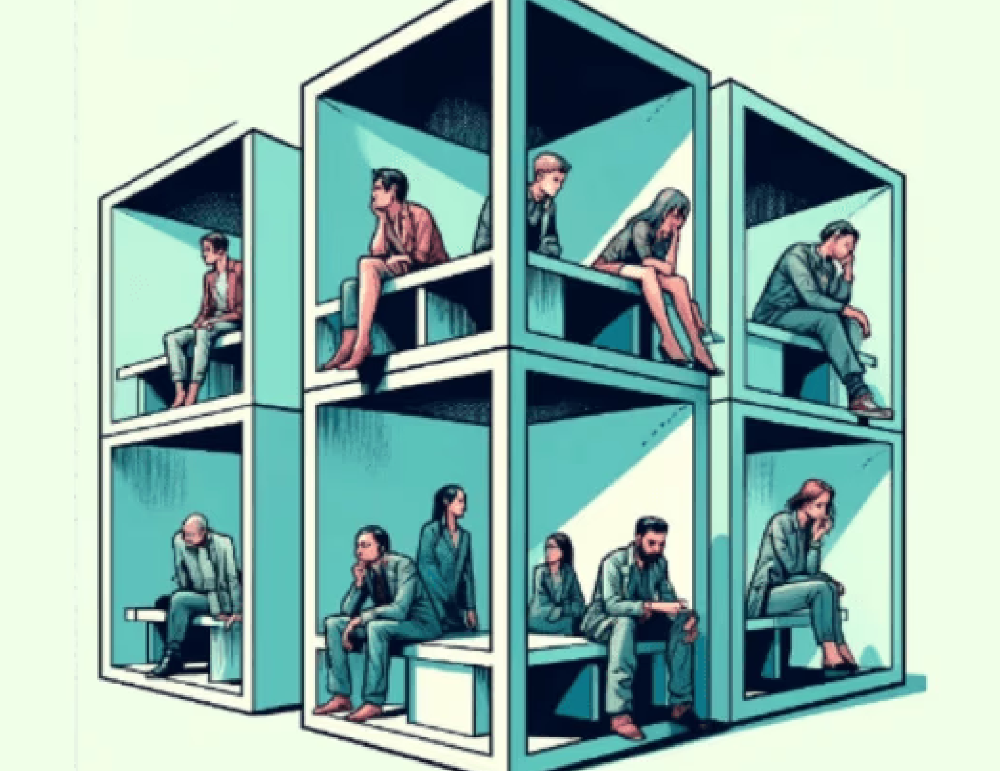
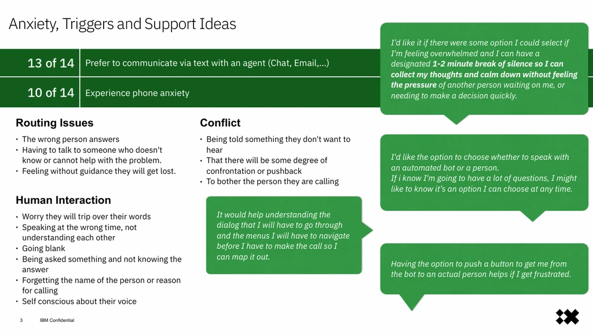
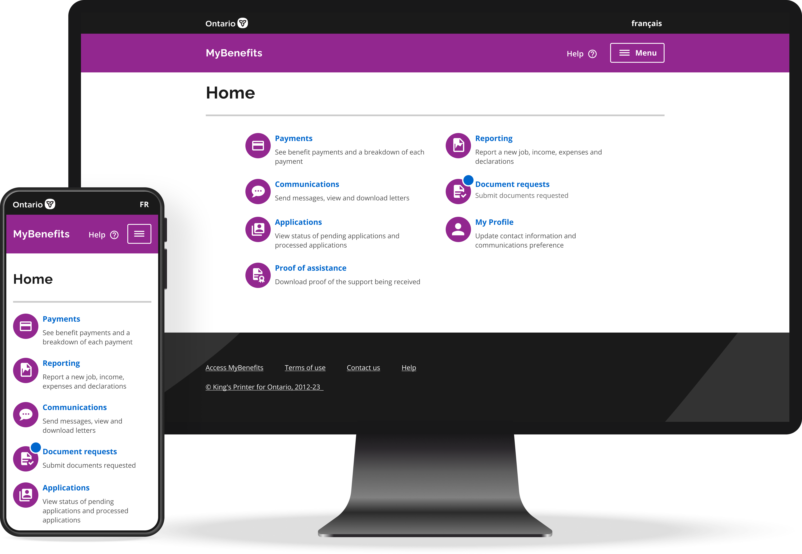
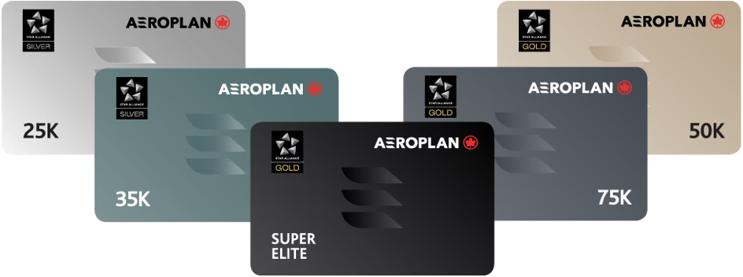
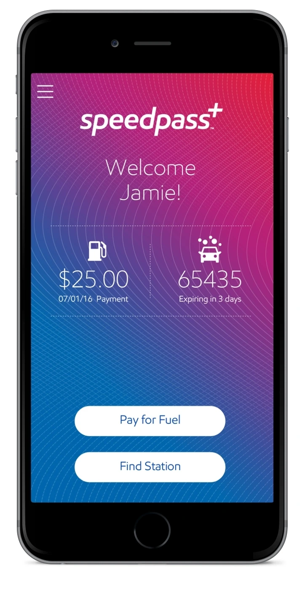
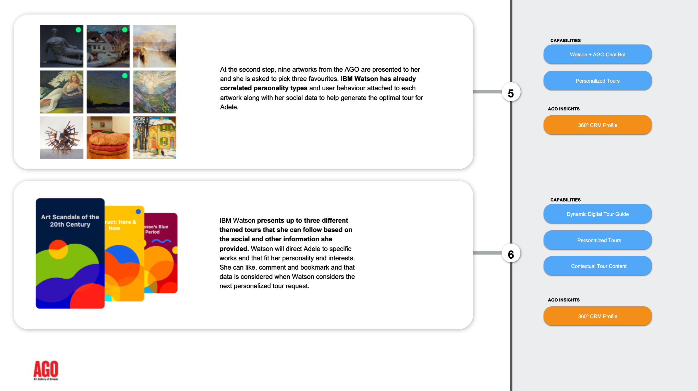

AI use-case discovery, future-state visioning, product direction, governance questions, and practical adoption—from the Watson era to today’s agentic systems.
Complex journeys, regulated environments, facilitation, service architecture, and the connective tissue between customers, operations, technology, and policy.
Functional prototypes, AI-assisted development, connected workflows, and hands-on product work that closes the gap between an idea and something testable.
Use the lenses to follow the part of the work that matters for the role. Many cases cross categories because the strongest work usually does.

TD Bank · 2022–2024 · Research systems
UX Research Repository
Turned twelve years of scattered research into a working knowledge system for 400+ human-centred design staff.
50+ prototype iterations~234 h saved per researcher/year$120K licensing avoided
Read the case +
The challenge
Research knowledge was fragmented across years, teams, and tools, making prior evidence difficult to find or reuse.
My role
Product Owner, Service Designer, Product Design Lead, and developer. I shaped the service, iterated the experience, and built the working solution in Power Apps and SharePoint.
What changed
The repository unlocked historical research, reduced repeated searching and duplicated work, and created a shared operational capability—not just another archive.

IBM iX · 2022 · Transformation enablement
Contact-centre transformation at enterprise scale
Created the framework, workshop templates, and project hub that helped implementation leads navigate the needs of 60+ lines of business.
Read the case +
The system problem
Each line of business had distinct customer, operational, and implementation demands. A single technical rollout could not succeed without a shared way to surface and reconcile those differences.
My role
UX Strategy Lead at IBM iX. I designed the enablement framework and trained implementation leads to use it.
The value
The work gave distributed teams a repeatable process for discovery, alignment, and implementation planning.
TD · 2021 · Financial services
Domestic Wire Origination
Led product design for a high-consequence banking journey serving 1,100+ U.S. branches and more than 10 million customers.
Read the case +
The challenge
Modernize a complex money-movement journey while respecting operational controls, branch realities, and customer risk.
My role
Lead Product Designer. I used research, journey logic, and high-fidelity Axure prototyping to make complex decisions visible and testable.
The result
A coherent target experience that helped business and technology teams align around the future journey.
Government of Canada · 2022 · Public services
My Service Canada future architecture
UX leadership for Benefits Delivery Modernization: a simpler, joined-up service built around single sign-on, “tell us once,” and clearer self-service.
Read the case +
The context
Benefits delivery spans programs, channels, policy, identity, and operational systems. The experience had to become simpler without pretending the underlying system was simple.
My role
UX Lead for the future architecture and service direction.
The direction
A customer-centred architecture supporting streamlined applications, reduced waits, and faster access to benefits.

Current service illustration · Government of Ontario, 2026
IBM iX · 2019 · Inclusive public services
Ontario MyBenefits — Ontario Works & ODSP application
Led UX research and design for the bundled Ontario Works and Ontario Disability Support Program application, creating a joined-up flow to reduce repeated data entry, cognitive load, and service handoff friction.
Read the case +
The challenge
People seeking essential support had to navigate separate programs, repeated data entry, literacy barriers, and operational handoffs between Ontario Works and the Ontario Disability Support Program.
My role
UX Research and Design Lead. I interviewed frontline caseworkers, designed bundled prototype flows, and tested iteratively with staff and citizen participants.
The direction
A single, accessibility-first path that could support immediate Ontario Works assistance and transition into disability assessment without making applicants restart.
The image shows Ontario’s current service; my work focused on the bundled application research and design in 2019.
BMO · 2016 · Product strategy
Trident product bundling platform
Made a complex financial product model understandable through experience architecture and a functional Axure prototype.
Read the case +
The challenge
Translate interconnected product rules into a journey customers and teams could understand.
My role
Senior UX Consultant, working from product structure through interaction model and prototype.
The contribution
The prototype became a concrete decision-making tool for aligning the team around the intended product experience.
Human2ai.ca · 2024–present · AI product
An owner-approved AI business team
Product direction and hands-on build of an AI-as-a-Service platform combining brand-locked account managers, specialist agents, connected tools, and approval-gated workflows.
Product strategyAgent orchestrationHands-on build
Read the case +
The opportunity
Small businesses need useful AI capacity without surrendering context, brand control, or approval over consequential actions.
My role
Product lead and hands-on builder across service model, interaction design, workflow architecture, tools, and quality gates.
The product
A client portal for connected AI account managers and specialists that can use client-specific context and tools while keeping owners in control.
Klara Klartext · 2025–present · Civic AI
Multilingual civic-information assistant
Originated and technically developed a public assistant that helps people analyze political claims, respond to slogans, interpret news, and create age-appropriate teaching materials.
Read the case +
The need
Give people practical, accessible help navigating polarizing or misleading public discourse.
My role
Originator and technical developer, working with OMAS GEGEN RECHTS Hürth across discovery, conversation modes, guardrails, brand, campaign system, and public launch.
Status
Klara entered public testing in March 2026, with its behaviour and communication system continuing to evolve through real-world use.
Matti · 2026–present · Early product discovery
Student-facing video-agent kiosk PoC
Created and hands-on built an early multilingual kiosk concept to help pupils name conflict, bullying, exclusion, or digital harms and prepare a clear handoff to an authorized adult.
Read the case +
The design question
Could a school-based agent help a young person articulate what happened without replacing the judgment, duty, or care of a responsible adult?
My role
Creator and hands-on builder using HeyGen LiveAvatar and ElevenLabs.
The gate
Pedagogy, privacy, provider readiness, and escalation governance remain explicit discovery and approval gates—not afterthoughts.
H2AI × Higgsfield · 2026 · AI workflow design
Approval-gated media workflows
Integrated product and campaign media generation into H2AI while preserving brand, source-asset, product, and final-artifact lineage.
Read the case +
The problem
AI media can be fast and still be operationally unsafe when prompts, assets, brands, and outputs lose their relationship to one another.
My role
Designed and built provider routing and worker orchestration for product animation and social campaign workflows.
The principle
Generation stays traceable and approval-gated so speed does not erase accountability.
Air Canada · 2016 · Conversational design
Conversational booking prototype
Designed an Axure conversational-flow prototype for ticket purchase and seat selection in a Watson-era chatbot concept.
Read the case +
The exploration
What changes when a structured airline booking flow becomes a conversation rather than a sequence of forms?
My role
UX Consultant responsible for the conversation and interaction prototype. I did not build or implement Watson.
The artifact
A functional prototype that made a future interaction model tangible enough to critique and discuss.

Air Canada · 2019 · Customer research
Aeroplan onboarding research
Led customer research for the Aeroplan onboarding experience connected to the Starbucks Rewards integration.
Read the case +
The focus
Understand how people interpret the value, relationship, and steps of a cross-brand loyalty onboarding journey.
My role
User Research Lead, bringing customer evidence into experience decisions.
The contribution
Clearer evidence about user expectations and friction in a partnership journey where two familiar brands meet.

ExxonMobil · 2017 · Mobile product
Speedpass+ payment app
Combined research and product design to improve a mobile payment experience used in the practical realities of fuel retail.
Read the case +
The context
The experience crossed physical location, payment, mobile interaction, and moments where clarity and trust matter.
My role
Senior UX Consultant, Research Lead, and Product Designer.
The approach
Used research and prototyping to connect real-world behaviour with product decisions.
Tourism Nova Scotia · 2019 · Public-sector strategy
Tourism, culture, and economy initiative
Helped connect visitor experience, culture, and economic goals through human-centred research and strategy.
Read the case +
The system
Tourism experiences are created across many organizations, places, policies, and service moments.
My role
Senior UX Consultant supporting research, synthesis, and strategic direction.
The contribution
A more connected view of visitor needs and the ecosystem required to meet them.
Nova Scotia Health · 2019 · Public health
Vaccination uptake workshops
Facilitated collaborative workshops around a public-health challenge shaped by trust, access, behaviour, and service delivery.
Read the case +
The challenge
Vaccination uptake is not a single-interface problem; it sits across beliefs, systems, communication, and access.
My role
Workshop facilitator using structured co-creation to help participants surface the system and identify opportunities.
The contribution
A shared problem frame and practical direction grounded in multiple perspectives.

Art Gallery of Ontario · 2018 · Future vision
Future visitor experience
Co-facilitated discovery and future-state design for how a major cultural institution could evolve its visitor experience.
Read the case +
The question
How might a museum use emerging capabilities while preserving what makes a cultural visit human, social, and meaningful?
My role
Workshop Co-Facilitator and Senior UX Designer/Strategist.
The contribution
A future vision shaped through structured discovery, co-creation, and experience strategy.
No cases match this lens yet.
04 / How I work
Make the system visible.
The deliverable changes. The discipline does not: build enough shared understanding to make the next important decision.
01
Frame
Clarify the decision, the system around it, and what evidence is actually missing.
02
Research
Meet people in context, examine the existing evidence, and look for the patterns that change direction.
03
Make
Turn the thinking into a journey, prototype, service model, or working product that people can respond to.
04
Learn
Test the riskiest assumptions early and make trade-offs explicit before they become expensive.
05
Enable
Leave teams with reusable systems, clearer decisions, and the capability to keep moving.
05 / Experience
Enterprise depth. Builder energy.
My work spans banking, airlines, government, public health, energy, culture, and independent AI products—usually where many parts of a system have to move together.
2024—present
Founder & Principal Consultant
SYSTEMshift / Human2ai.ca
AI product strategy, human-centred automation, service design, workshops, custom applications, and hands-on product building.
2022—2024
Senior Manager, Service Design
TD Bank
Led and built the UX Research Repository, creating an internal product that made research evidence findable and reusable across the organization.
2016—2022
Senior User Experience Consultant
IBM iX
Research, service and product strategy, facilitation, and future-state work across AI, banking, airlines, government, public health, and cultural institutions.
Earlier
Information architecture, UX & development
Agency and product environments
Information architecture, creative-team leadership, UX design, PHP/JavaScript development, CMS work, and relational database architecture.
UX researchService designAI product strategyResearch operationsFacilitationAxure prototypingAgentic workflowsAI-assisted development
06 / Let’s talk
Need someone who can find the signal and move the work forward?
I’m open to senior and principal roles where research, AI strategy, product direction, and practical delivery need to connect.